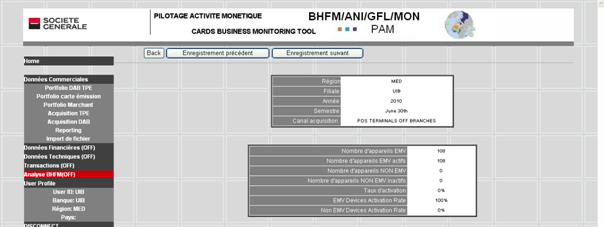

Table of contents Close window
VIEW function is linked with each line / record display in the table to display details
To display next or previous record buttons are available. Click on Next Records or Previous Records.
Portfolio DAB-TPE table example : displaying a record detail
